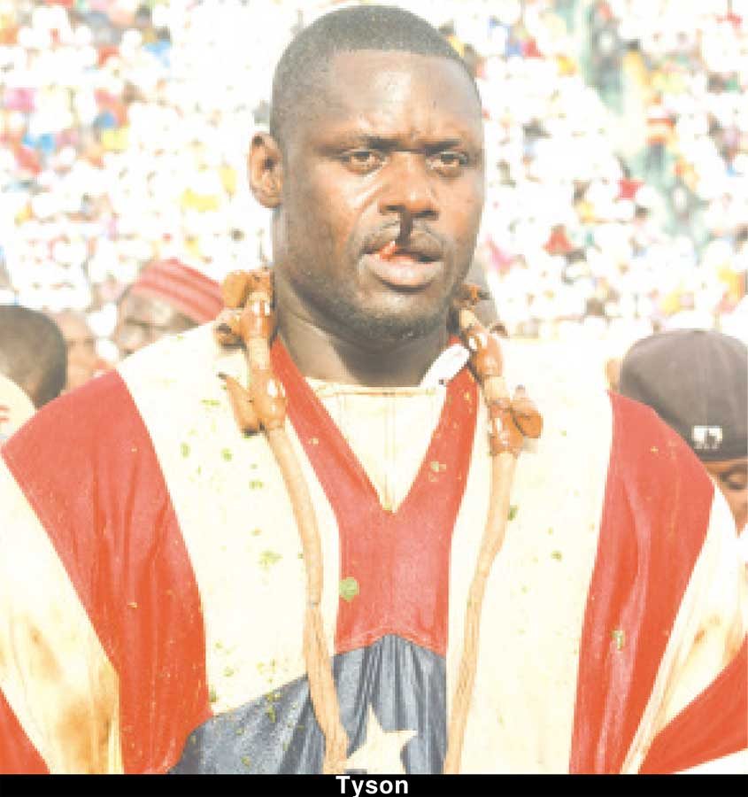
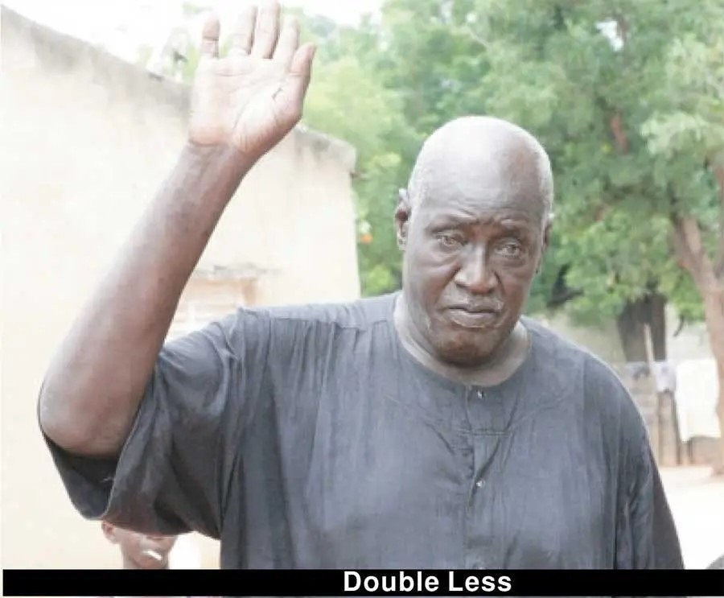
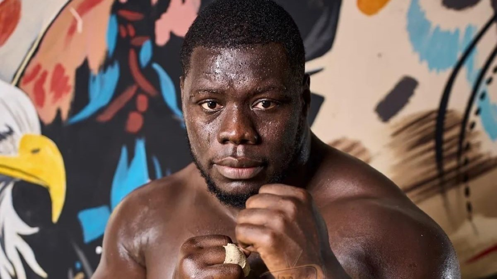
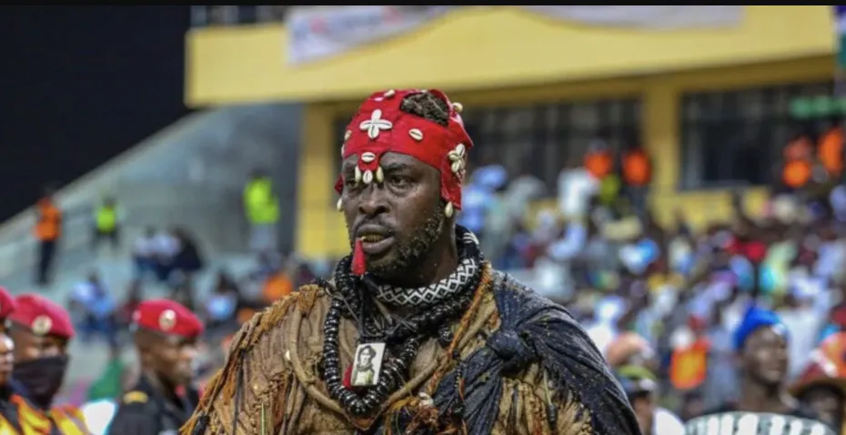
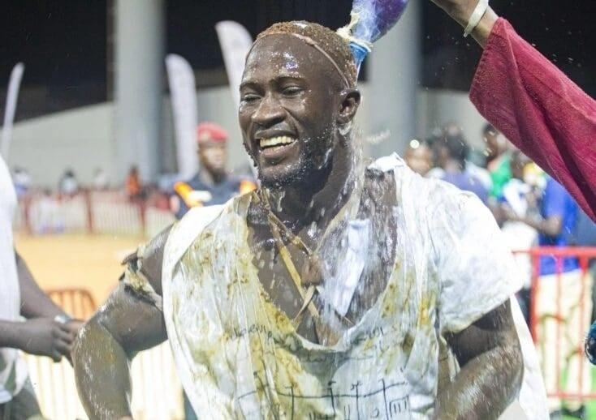
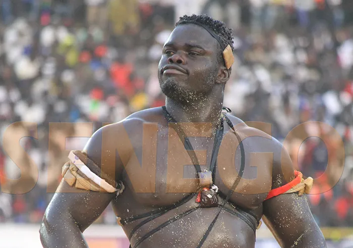

LÉGENDES DE LA LUTTE SÉNÉGALAISE

YÉKINI
22 combats 19 victoires 2 défaites 1 nul
👑 Roi des arènes (2004-2012, 8 ans de règne)
✓ Victoires marquantes : Bombardier (3x), Tyson (2x), Gris Bordeaux, Lac de Guiers 1, Balla Bèye 2 (3x)
✗ Défaites : Balla Gaye 2 (2012), Lac de Guiers 2 (2016)
✓ 15 ans d'invincibilité (1997-2012)
🏅 Médaillé d'argent aux Jeux Africains 1999 (lutte gréco-romaine)

TYSON
15+ combats 10+ victoires 5+ défaites
👑 Roi des arènes (1999-2002)
✓ Victoires marquantes : Manga 2 (1999, lui prend son titre), Mor Fadam (2x), Moustapha Gueye (Tigre de Fass, 1997)
✗ Défaites : Bombardier (2002, perd son titre), Yékini (2006, 2010), Balla Gaye 2 (2011), Gris Bordeaux (2015)
⭐ Révolutionnaire : A fait exploser les cachets (jusqu'à 100 millions FCFA)
1,99 m 135 kg

TIGRE DE FASS
15+ combats 10+ victoires 4+ défaites 1 nul
👑 Surnom légendaire donné après sa victoire contre Sa Ndiambour (1968)
✓ Combat historique : Match nul contre Yékini (2006)
✗ Défaites notables : Tyson (1997), Yékini
⭐ Figure emblématique de l'écurie Fass
Courage légendaire Surnommé "Tigre" pour sa bravoure

DOUBLE LESS
Père de Balla Gaye 2 plus d'une cinquantaine de victoire
👑 Légende de l'arène Années 1980-1990
✓ Origine du surnom : Donné par Mame Gorgui Ndiaye qui peinait à passer sa garde (bras très longs)
⭐ Héritage : Fondateur de l'École de Lutte Balla Gaye
Père du "Lion de Guédiawaye"
🏆 LES MEILLEURES DE LA LUTTE SÉNÉGALAISE 🏆

Balla Gaye 2
30 combats 23 victoires 7 défaites
Titre : Roi des arènes (2012-2014)
Victoires marquantes : Modou Lô (2010, 2019), Yekini (2012), Tapha Tine (2013, 2024), Gris Bordeaux (2018, 2022)
Défaites : Eumeu Sène (2009, 2015), Bombardier (2014, 2022), Boy Niang 2 (2023), Siteu (2025)

Modou Lô
27 combats 23 victoires 3 défaites 1 nul
Titre : Roi des arènes (2019-...)
Victoires marquantes : Eumeu Sène (2014, 2019), Gris Bordeaux (2012, 2016), Lac de Guiers 2 (2018), Boy Niang 2 (2024), Siteu (2024)
Défaites : Balla Gaye 2 (2010, 2019), Bombardier (2015)

Eumeu Sène
25+ combats 13 victoires 10 défaites 2 nuls
Titre : Roi des arènes (2018)
Victoires marquantes : Balla Gaye 2 (2009, 2015), Bombardier (2018, 2022), Gris Bordeaux (2011)
Défaites : Modou Lô (2014, 2019), Franc (2025), Tapha Tine (2023)

Franc
16 combats 16 victoires 0 défaite
Invaincu !
Victoires marquantes : Bombardier, Ama Baldé (2025), Eumeu Sène (2025), Serigne Ndiaye 2, Tyson 2, Sokh
NOUVELLE GÉNÉRATION DE LA LUTTE SÉNÉGALAISE

SITEU
16 combats 11 victoires 4 défaites 1 sans-verdict
68% de réussite
Victoires marquantes : Balla Gaye 2 (2025), Zarco (2015), Zoss (2017), Malaw Séras (2013), Narou Sogas (2012), Rouge Bordeaux (2011), Frazier (2011), Nakha Nakha (2011), Zoss 3 (2010), Bébé Eumeu (2010), Mbaye 20 ans (2009)
Défaites : Modou Lô (2024), Lac de Guiers 2 (2023), Gouye Gui (2018), Sa Thiès (2016), Boy Sèye (2013), Mame Balla (2010)
6/6 contre Pikine Danseur exceptionnel

ADA FASS
17 combats 13 victoires 4 défaites
Victoire majeure : Liss Ndiago (19/07/2025) - victoire en moins de 5 minutes
Autres victoires : Tapha Mbeur
Défaites récentes : Lac de Guiers 2 (04/04/2025), Zoss (08/10/2023)
Style explosif 🥋 Pratique le MMA
Combat à venir : Eumeu Sène (avril 2026)
Victoire contre Mano Israël en MMA (2024)

REUG REUG
Lutte sénégalaise 16-0 (invaincu) MMA: 7-1
CHAMPION DU MONDE ONE CHAMPIONSHIP (MMA)
Premier sénégalais champion d'une organisation majeure de MMA
Victoire historique : Anatoly Malykhin (09/11/2024) - Décision partagée - Titre des poids lourds ONE
Victoires MMA : Marcus Almeida (2023), Jasur Mirzamukhamedov (2022), Batradz Gazzaev (2022), Patrick Schmid (2021), Alain Ngalani (2021), Sofiane Boukichou (2019)
Défaite MMA : Kirill Grishenko (2021) - TKO
Premier champion sénégalais 193 cm 120 kg
Kickboxing : Victoire par KO contre Boucher Ketchup (06/07/2024)

AMA BALDÉ
18 combats 14 victoires 4 défaites
Classement PERL : 8e (1756 points)
✓ Victoires marquantes : Gris Bordeaux (2023/2024), Papa Sow (2017/2018), Gouye Gui Djimbory (2015/2016), Tapha Tine (2014/2015), Zoss (2014/2015)
✓ Victoires contre les Parcelles (4): Baye Peulh, Balla Diouf, Zoss, Papa Sow
✗ Défaites : Franc (2024/2025), Modou Lô (2023/2024), Gouye Gui Djimbory (2011/2012), Ness (2009/2010)
4V/1D contre les Parcelles Victoire contre Gris Bordeaux